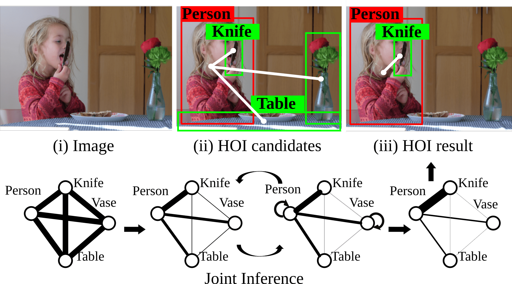
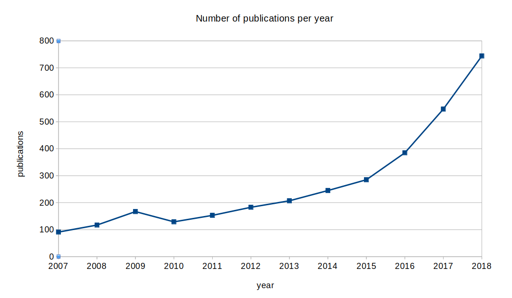

Learning Human-Object Interactions by Graph Parsing Neural Networks
S. Qi, W. Wang, B. Jia, J. Shen, S.-C. Zhu

Conclusions
New dataset
We will be hearing more about GNNs

References
Graph Neural Networks:
Semi-Supervised Classification with Graph Convolutional Networks. T.N. Kipf, M. Welling. arXiv preprint arXiv:1609.02907. 2017.
Relational inductive biases, deep learning, and graph networks. P.W. Battaglia et al.. arXiv preprint arXiv:1806.01261. 2018.
Applications:
Graph Neural Networks for Human-aware Social Navigation. L.J. Manso, R.R. Jorvekar, D.R. Faria, P. Bustos, P. Bachiller. arXiv preprint arXiv:1909.09003. 2019.
SocNav1: A Dataset to Benchmark and Learn Social Navigation Conventions. L.J. Manso, P. Nunez, L.V. Calderita, D.R. Faria, P. Bachiller. arXiv preprint arXiv:1909.02993. 2019.
Learning Human-Object Interactions by Graph Parsing Neural Networks.S. Qi, W. Wang, B. Jia, J. Shen, S.-C. Zhu. arXiv:1808.07962. 2018.
Relational Graph Learning for Crowd Navigation. C. Chen, S. Hu, P. Nikdel, G. Mori, M. Savva. arXiv preprint arXiv:1909.13165. 2019.